Générer son propre Pokémon : un prototype de recherche intégré au jeu
juillet 2026
Résumé
J’ai créé un prototype de recherche qui génère une nouvelle espèce de Pokémon à partir de six mots choisis en cours de partie. Quelques minutes plus tard, elle apparaît dans les hautes herbes : le joueur peut la rencontrer, la capturer et lui donner un surnom. Le prototype génère son apparence, son nom, son type, ses statistiques de base, ses capacités et les données nécessaires à son intégration dans le jeu.
Le prototype relie les dialogues, le choix des mots, la génération en arrière-plan, les rencontres avec des Pokémon sauvages, la capture et l’attribution d’un surnom, sans interrompre le jeu. Chaque espèce générée est enregistrée sous une forme utilisable par les systèmes existants du jeu.
Mon travail portait sur le cadre de génération plutôt que sur le modèle lui-même : définir les exigences qui préservent l’équilibre du jeu et la cohérence visuelle, puis laisser l’IA explorer les possibilités dans ces limites. J’ai également joué au prototype pour apprécier, de façon préliminaire, si le caractère unique d’un personnage suffisait à susciter de l’attachement.
Question : le caractère unique d’un personnage suscite-t-il de l’attachement ?
Les jeux permettent de choisir, d’élever et de nommer des personnages jusqu’à ce qu’ils nous semblent vraiment les nôtres. Le point de départ reste pourtant un ensemble d’options préparées par les développeurs. Si l’IA générative permettait aux joueurs de façonner un personnage dès le départ, leur attachement serait-il plus fort ?
Une image générée ne suffit pas à explorer cette question. Le personnage doit entrer dans le monde du jeu, pouvoir être rencontré et capturé, puis rester jouable. J’ai créé deux parcours offrant des degrés d’implication différents : parler au vieil homme déclenche une génération sans saisie, tandis que parler à la vieille femme permet de choisir six mots. Le premier de ces personnages auquel le joueur s’adresse détermine le mode de génération pour cette partie.
Ce prototype ne permet pas de conclure sur l’attachement. Son objectif est d’intégrer du contenu généré au déroulement ordinaire du jeu et de définir les conditions de futures comparaisons.
Déroulement du jeu
La séquence ci-dessous montre le parcours guidé par le joueur. Dans le Bois Clémenti, il parle à une vieille femme et choisit six mots dans le vocabulaire prédéfini du jeu, appelé Easy Chat dans la version anglaise. La génération se poursuit en arrière-plan pendant qu’il joue. Un cri signale que la nouvelle espèce est prête ; entrer dans les hautes herbes déclenche une rencontre, et les commandes habituelles permettent de la capturer. Chaque génération produit un nom, un type, des statistiques de base, des capacités, des sprites de combat de face et de dos et une icône pour l’équipe. La vidéo de démonstration montre l’ensemble de la séquence.

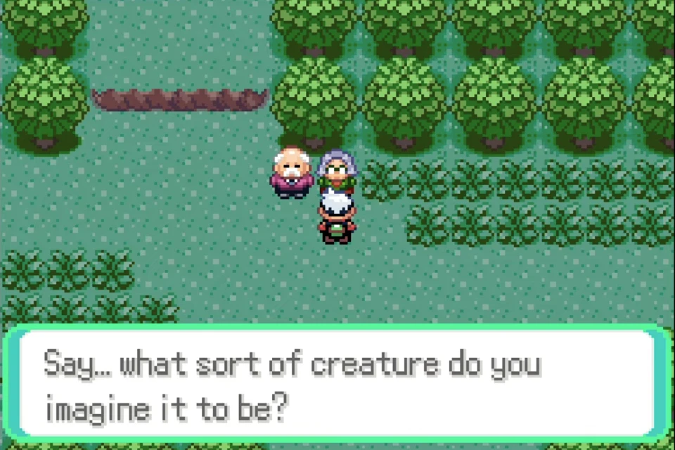

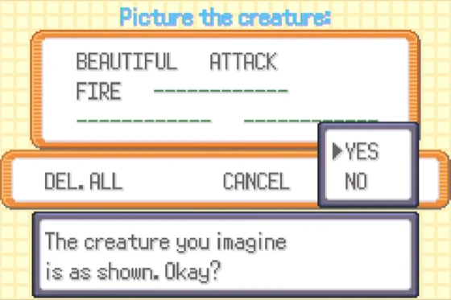

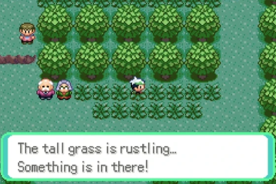

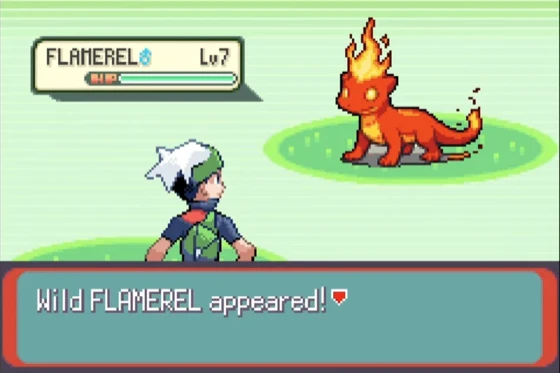

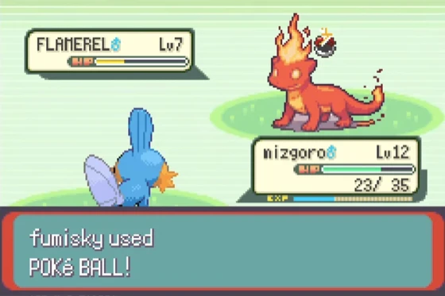

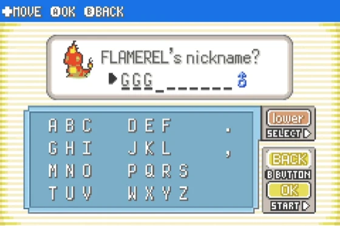

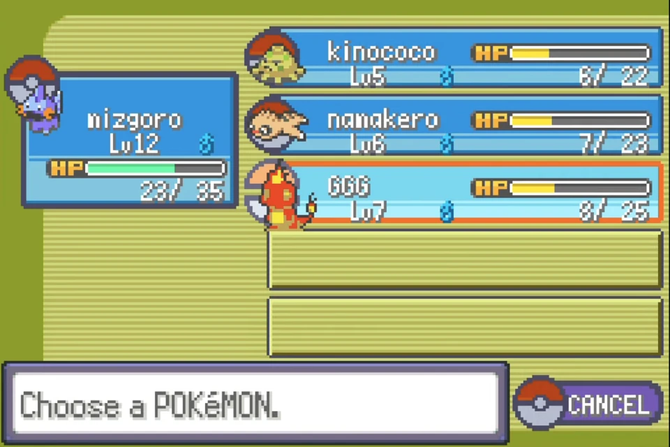

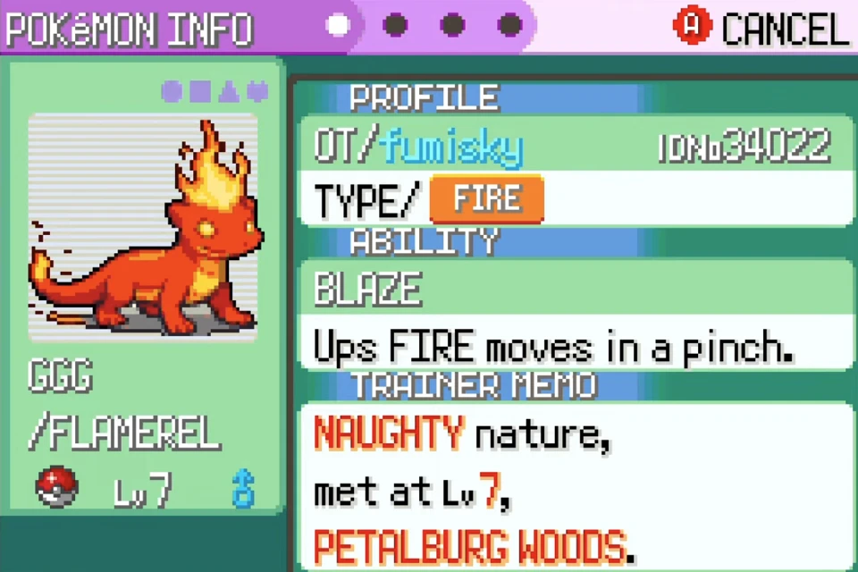
Défi de conception : garder les personnages générés jouables
Générer un nouveau personnage et le faire fonctionner dans un jeu sont deux défis distincts. Des statistiques trop élevées peuvent déséquilibrer la difficulté, tandis que des types et des capacités mal assortis peuvent rendre le personnage difficile à entraîner. Un dessin trop complexe peut devenir méconnaissable une fois réduit à un sprite de 64 × 64 pixels.
Fixer tous les détails supprimerait l’intérêt de générer un résultat différent à chaque fois. Il fallait distinguer les éléments essentiels au fonctionnement du jeu de ceux qui pouvaient varier.
J’ai donc conçu l’espace des Pokémon possibles plutôt qu’un personnage unique. L’humain définit les objectifs, les contraintes, les contenus interdits et les méthodes de validation ; l’IA élabore des propositions dans ce cadre. Ce prototype fonctionnel met en pratique mon approche de conception sous contraintes.
Approche : définir les conditions de génération
Le système demande à un grand modèle de langage (LLM) de remplir des champs prédéfinis — nom, type, statistiques de base, capacités, morphologie et couleur — plutôt que de rédiger un texte libre. Un validateur vérifie chaque réponse avant de l’accepter. Si une règle est enfreinte, le système indique précisément la violation au modèle et lui demande de recommencer jusqu’à ce que les exigences soient respectées.
- L’humain définit les limites. L’équilibre du jeu, la lisibilité des sprites et les contenus acceptables sont traduits en règles explicites et vérifiables.
- L’IA élabore des propositions. Le modèle s’appuie sur les mots du joueur pour proposer des valeurs dans les champs autorisés.
- Le système vérifie la conformité aux règles. Il contrôle automatiquement les plages de valeurs, les combinaisons de capacités et les contenus interdits.
- Le retour porte uniquement sur les violations. Une proposition qui enfreint une règle est renvoyée avec le motif, puis régénérée.
Des contraintes qui préservent le jeu. J’ai fixé le total des statistiques de base entre 280 et 360, avec des limites inférieures et supérieures pour chaque statistique. Les capacités ont été extraites du code source du jeu et limitées à celles du type de l’espèce ou de type Normal. Les capacités mettant K.O. en un coup, provoquant l’autodestruction, infligeant des dégâts fixes ou excessivement puissantes ont été exclues. Le validateur vérifiait aussi le nombre de capacités offensives et la présence de capacités du même type que l’espèce. Le taux de capture, la vitesse de croissance et d’autres facteurs ont été fixés pour maintenir les différences générées dans une plage adaptée à la comparaison.
Des contraintes qui préservent la lisibilité visuelle. Les morphologies sont choisies parmi des silhouettes lisibles même sous forme de petits sprites. Le vocabulaire des couleurs et des caractéristiques est également limité. Les traits humains, le sang, les armes et le texte sont exclus. Les instructions de génération d’images incluent systématiquement des précautions comme « une seule créature », « montrer le corps entier » et « aucun membre supplémentaire ».
Lors d’une exécution enregistrée, le modèle a d’abord proposé un total de statistiques de base de 380. Le validateur a détecté la violation et demandé une nouvelle génération, qui a finalement produit une spécification totalisant 320. L’apport réside dans un processus qui rejette les résultats hors des contraintes définies, sans dépendre d’une réussite fortuite.
Garder l’expérience à l’intérieur du jeu
Le joueur n’utilise que les dialogues, le choix des mots et les rencontres dans les hautes herbes ; aucun écran de génération distinct n’est nécessaire. Les calculs intensifs sont exécutés par un processus Python sur le PC, qui échange des données avec le jeu par des fichiers. Des scripts Lua exécutés dans l’émulateur mGBA relient les deux, préservant les commandes familières du jeu tout en maintenant le traitement de l’IA à l’extérieur.
- Générer la spécification. Un modèle de langage local transforme les six mots en données d’espèce, vérifiées avant utilisation.
- Générer les visuels. Un modèle d’image crée une illustration de référence, puis des sprites de face et de dos et une icône d’équipe visuellement cohérents.
- Convertir en données de jeu. Les images sont réduites à 15 couleurs, puis converties et compressées en sprites et palettes compatibles avec la Game Boy Advance (GBA).
- Intégrer au jeu en cours. Les données sont écrites dans une zone réservée pour introduire la nouvelle espèce sans redémarrer le jeu.
Ces mêmes données sont écrites sur le disque : l’espèce générée est donc conservée lorsque le jeu est rechargé. La génération n’a lieu qu’une fois et ne peut pas être annulée. Si le joueur fuit ou perd le combat, le Pokémon reste dans le monde. S’il le met K.O., il ne réapparaît jamais. Cette irréversibilité fait de son unicité dans cette partie un élément de l’expérience.
Ce qui a pu être confirmé avec le prototype
J’ai réalisé ce prototype seul pour en vérifier la faisabilité technique. Il ne s’agit ni d’un jeu terminé ni d’une étude auprès d’utilisateurs. Les éléments ci-dessous distinguent ce que j’ai vérifié, ce que j’ai réalisé et ce qui reste à tester.
- Vérifié de bout en bout. Dans mGBA, j’ai confirmé toute la séquence : dialogue dans le jeu, choix de six mots, génération en arrière-plan, intégration au jeu en cours, rencontre avec le Pokémon sauvage, capture et attribution d’un surnom.
- Réalisé en vue de futures comparaisons. J’ai ajouté deux points d’entrée : une génération passive sans saisie et une génération guidée par les mots du joueur. Les dialogues, rencontres et captures peuvent être enregistrés pour les comparer.
- Relié aux systèmes existants, sans essais prolongés. La montée de niveau après capture, l’apprentissage de capacités, les combats, le stockage dans les boîtes et la poursuite du jeu après sauvegarde sont intégrés aux systèmes existants. Je ne les ai pas testés lors de longues sessions de jeu.
- Travaux futurs. La génération de formes évoluées en cours de partie n’a pas été réalisée et aucune étude comparative de l’attachement avec plusieurs participants n’a été menée.
Ce que mon essai m’a appris : l’unicité seule n’a pas suscité d’attachement
En jouant moi-même au prototype, je n’ai pas ressenti d’attachement fort pour le Pokémon généré. Il s’agit de mon impression personnelle en tant que développeur, sans possibilité de la généraliser à d’autres joueurs. Elle m’a néanmoins indiqué ce qu’il serait intéressant de faire varier dans une future comparaison.
Deux facteurs m’ont paru mériter une étude.
- La qualité du résultat. Si l’apparence et le concept du personnage ne sont pas assez attrayants, son unicité dans la partie peut ne pas suffire à entretenir l’attachement.
- Le degré d’implication. Le choix de six mots m’a donné l’impression de recevoir un résultat plutôt que de l’avoir créé. Je suppose que l’implication dépend de la qualité du processus créatif : revenir sur ses choix, comparer des possibilités, corriger les détails et assumer le résultat, plutôt que simplement fournir davantage d’informations.
En revanche, je suis attaché à Hanagitsune, un personnage créé en dehors du processus automatique du jeu, par des échanges répétés avec plusieurs outils d’IA générative et des retouches manuelles. J’ai comparé des propositions, corrigé des détails et poursuivi le travail jusqu’à être satisfait. Je pense que la qualité du résultat et mon implication dans ce processus itératif ont toutes deux contribué à cet attachement.
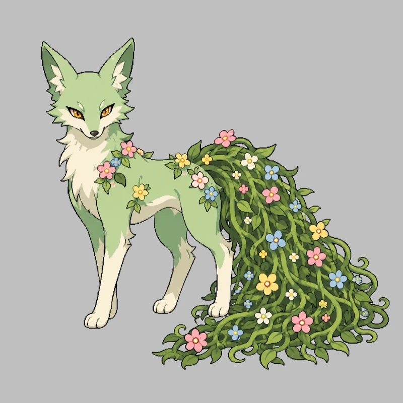
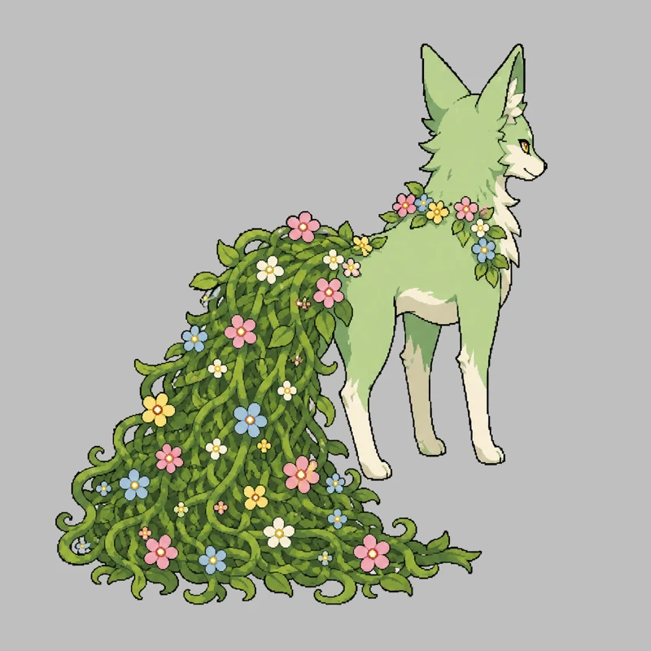
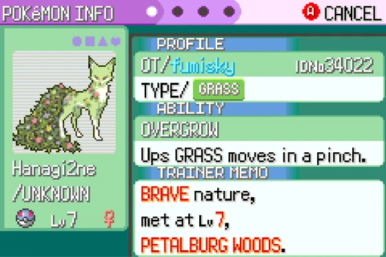
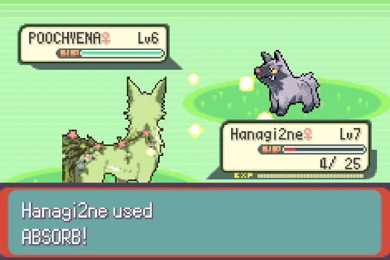
Ce prototype ne permet pas de savoir si le contenu généré suscite de l’attachement. Il traduit cette vaste question en deux facteurs que l’on peut faire varier délibérément : la qualité du résultat et le degré d’implication. Une future étude ajouterait des possibilités de choisir, comparer et réviser pendant la création, harmoniserait le niveau de qualité des résultats et comparerait les expériences de plusieurs participants.
Réalisation technique
Le processus de génération, le cadre de contraintes et de validation, la conversion des données pour la GBA et les modifications du jeu sont publiés dans le dépôt GitHub.
Ce projet de recherche indépendant s’appuie sur la décompilation pret/pokeemerald. Il ne distribue ni ROM, ni correctif de ROM, ni ressources du jeu. Pokémon est une marque de Nintendo, Creatures Inc. et Game Freak Inc. ; ce projet n’est ni affilié à ces entreprises ni approuvé par elles.